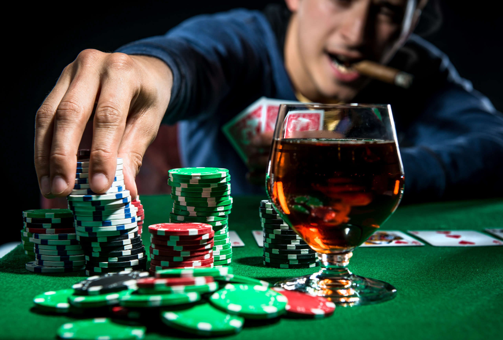

Немного о покере вообще
Покер — одна из самых популярных карточных игр с богатой и интересной историей. Сегодня, с появлением новых технологий, покер может также относиться к видеопокеру, однопользовательской игре, которую можно увидеть в казино во многом наподобие игровых автоматов, или к другим играм, в которых используется рейтинг покерных комбинаций. Хотя история покера является предметом споров, вот общий обзор того, как началась игра.
Два столетия назад в эту игру в основном играли мошенники, преступники и мастера по изготовлению ножей на борту речных судов. Сегодня это знаменитый «вид спорта», в который играют профессионалы во всем мире. Статус преступника сегодня сменился статусом знаменитости игрока в покер. Кроме того, технологии пошли дальше, и покерные руки больше не раздаются профессиональными читерами, манипулирующими колодой, а чаще всего с помощью программ, которые объединяют миллионы игроков по всему миру.